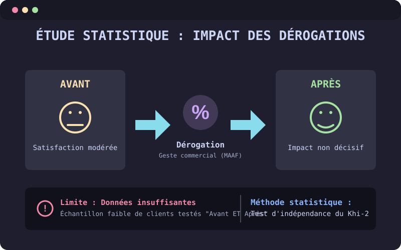

Réaliser une étude pour mesurer l'impact des gestes commerciaux (une dérogation) sur la satisfaction client.
Le contexte de ce projet repose sur la gestion de la relation client : dans certains cas précis, les clients peuvent recevoir un geste commercial de la part de la MAAF. Il existe deux grands types de dérogations : soit une réduction ou un remboursement sur la cotisation, soit un coup de pouce sur une prestation.
Mon étude sert à mesurer l'impact de ces gestes sur l'expérience client. L'objectif est de savoir s'il y a une réelle évolution entre la satisfaction du client avant d'avoir eu cette dérogation, et après l'avoir obtenue, pour vérifier si l'effort financier de l'entreprise est efficace.
Pour réaliser cette étude, j'ai récupéré une table SAS contenant toutes les informations sur les clients ayant répondu à une enquête de satisfaction, leurs notes de satisfaction et s'ils ont obtenu une dérogation, par exemple. Ensuite, j'ai exporté ces données sur Excel pour réaliser des tests d'indépendance du Khi-deux afin de chercher s'il y avait un lien statistique entre les variables. Au niveau des résultats, j'en ai conclu qu'il n'y avait pas de réel impact : obtenir un geste commercial ne se traduisait pas forcément par une satisfaction plus élevée après coup.
Cependant, le résultat n'est pas 100 % fiable et cela s'explique principalement par un manque de données. Mon volume d'observations était trop faible, et surtout, il y avait beaucoup trop peu de clients qui avaient répondu à une enquête de satisfaction à la fois avant et après avoir reçu leur dérogation.
Pour aller plus loin, j'ai donc préconisé à mon équipe de refaire cette étude plus tard avec un historique plus solide. Pour cela, ma recommandation est de proposer l'enquête de satisfaction de manière systématique à la fin de chaque appel, et non plus de façon ponctuelle, afin de collecter un maximum de retours.
Cette mission a été une super opportunité d'appliquer concrètement les compétences en statistiques que j'ai acquises en cours sur un vrai cas d'entreprise. Au-delà des calculs, j'ai surtout appris à prendre du recul pour tirer de réelles conclusions de mes résultats et à être force de proposition en faisant des préconisations concrètes.